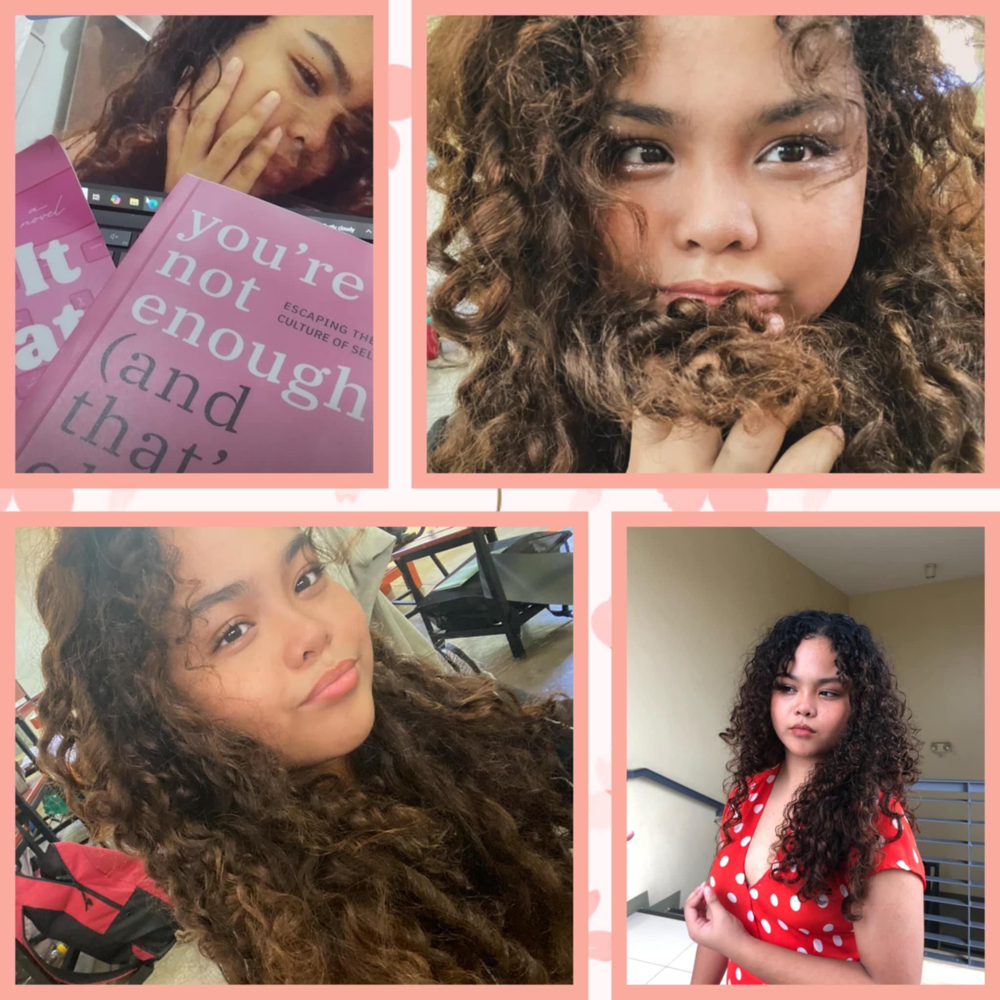

About Me |
Lessons |
2nd QTR Activities |
Fun Games And More |
Reflection |
|---|---|---|---|---|
|
Lets get to know eachother better. And connect through different experiences and hobbies. In here you can see different videos, photos, and songs. That can show you what I have been up to and what I currently love. |
The lessons within this quarter are quite difficult,are more vast, And has thought me and my classmates numerous things when it comes to making the most with our time together and the technology we have. In here a quick summary of the lesson will be given together with a sample code and sample output. |
The Second quarter has honestly been amazing.Currently this is the quarter with the most class actvities that actually require unity and creativity. Giving us a new environment compare to the ones filled with pages or test papers and projects that we have already been used to. |
Lets be more Creative and Interactive!This website is not just about me, but its also made for you! So here are different questions, songs, games and information to get you all the more interested and make this experience something you would enjoy. |
Sure this part is the last, but it is definitley not the least. Lets dive deep to the lessons we could learn from lectures and activities we have in school. How do we reflect on them? Which perspective will you choose and which gives all these learnings more meaning? |
ALL ABOUT MEüíó
Good day to you, I am Georgina Amber P. Gulpany.Next august I will be 16 years old. My hobbies are reading, journaling,debating,swimming and listening to music. I also have interests in traveling, business and philosophy. I have read books like finance, self help, romance, and stories filled with wisdom. I have currently been reading books that encourage me to do better or learn new things like atomic habits, act like a lady think like a man and so mucn more. I like self learning, and am mostly the type of person that prefers to be alone. Which is why I don't have a big population of friends, and always value those closest to me. My favorite foods are fish and chips, peporoni pizza, egg, and palabok. Ever since I was young I have always been so curious, I always liked to ask why and I still do so up until now.
I also really loved to talk and learn about the past. I like history, I like the idea of learning from the mistakes then that we can stop now. I also take an interest in reading, for me its such a beautful way to learn. Its peaceful to have the feeling of realization and knowing you will walk the steps of life with something new. Which Is why I love to travel, I have already been to the UAE, Honkong and Macau. But the country I have loved the most, is the UAE. It had brought me into the land of many cultures and vast desserts. To be honest my heart still remains to that place and I wish to have lived there. Ever since I was young I already had the love for business, and even had many attempts of setting my own small businesses. As I grew older I have learned to appreciate my steps in life, whether they be big or small, even those that I wouldn't have dare to take. I hope to become a much better person in the future and create a change by atleast inspiring others.
MY FAVORITE WEBSITESüåü
My Favorite WebsiteMy Favorite Website For Music
My Favorite Social Media App
OTHER WEBSITES TO LEARN NEW THINGS MEET OTHER PEOPLEüåü
App to find a good reading community
Good website for singing lessons
Lets look at the bigger picture of life
LESSONSüíó
Lesson |
Learned |
Code and output |
|---|---|---|
Cascading Style Sheetüíó |
In here we learn about CSS overall. What it is and what benefits it has. CSS stands for Cascading Style Sheet and describes how HTML elements are to be displayed on media, saving a lot of work for coders, given that it has easy maintenance. The difference of CSS and html is that, CSS is responsible for the design or style of the website, including the layout, visua effects and the background color, while HTML is made to create the actual content/foundation of the page. CSS is also capable of making your page easily updatable, positioning objects you would want on the page and creates custom tags. |
|
How CSS is apliedüíì |
There are different ways to apply CSS. This includes, the linked method, embedded method and the inline method. With the linked method, the CSS file is stored in a seperate file, instead of directly in the html page. For the embedded method the CSS file is stored as part of the HTML Page in the header section. And for the Inline method the CSS file is stored directly in the style attributes of the HTML tags. |
|
Cascading Style Sheet 2 üíó |
In this lesson we will be able to learn about Case Sensitivity, Punctuation, and white space. With this lesson we were able to learn about style properties of CSS 2 . For example, Fonts, Color, Text, and even Lists. There are also property values like keywords, lenth values, percentage valuesand URL. This lesson also contains the subtopic about selectors which could be either element, ID, Class, Universal, Group or attribute. |
|
Cascading Style Sheet 3 üíì |
Cascading Style Sheet 3, contains display properties which allow us to control how an element can be displayed. This lesson will introduce us to types of elements like the block -level elemnt, and Inline-level element. Other terms and concepts will also be learned like the Div tag, whicg divides the contents of a webpage into individual sections and is a block element and Span Tag which is the generic way of adding structure to an HTML document. Which is applied to an inline element. |
|
Selectors and Pseudo Classesüíó |
Selecrs are used to select or find HTML elements you want to style, while Pseudo classes are defined by a colon and are not user defined. The types of pseudo classes are LINK: for hyperlinks that have not yet been visited, VISITED: for visited hyperlinks, HOVER: for hyperlinks when the mouse is hover over them and ACTIVE: for when hyperlinks are clicked. |
|
Typography üíì |
For generic fonts can be specified at the end of the list to ensure that if the indicated font is not available, it will just use the available generic font in the browser. The default font which is Times New Roman will be used if ever you do not specify any font family. This lesson consists of Font property, Text property and CSS styles. The different kinds of bullets like, discs, decimal,lower roman, upper alpha and more can also be learned in this lesson just like pseudo elements which allow us to format a specific part if HTML elements. |
 |
Formatting Layout üíó |
In this lesson we will learn about the box model, which is where each element on a page exists on its own box wherein each of these boxes are aligned with eachother on the page, Element positioning the position property that allows placing an object or element precisely on a page, Offset, that allows you to set up the distance of the specified element from another element, Float which allows us to control where a specific block element will be put in ot placed. And lastly the Background property, that is basically a shorthand notation for all other properties. |
2ND QTR ACTIVITIESüíó
Activity |
Output |
|---|---|
BOOKLANDIAüíì:Creating bonds with characters you only meet in the pages of a book, why not be them atleast for a day? This years booklandia I chose to dress up as Snow White. During booklandia representatives show off with daring performances that portrays their characters. To the audience, the students of lpsci. So flip through the pages of our system and not only be a character but an author of the future. |
|
PERSONA ARTICULATAüíì: And I thank you! This is a pageant solely based of how the candidates will answer the given questions with whit and creativity. Persona Articulata is a pageant solely based off brains and empathy for the people. Can you speak up, for the youth, the truth and the future? |
|
HISTORICAL ICONüíì: Leave footprints in the sand no man can erase. Thats what historical icons have done throughout the years. And thats why up until now the people have tried to portray them. They show a symbol of courage and justice. |
|
CHACHAüíì:Move ur hips and sway with ease. For this activity in MAPEH we danced around together with out partners embracing the sound of music. All pupils dressed up and have practiced for this performance task and was one of the most thrilling and quite difficult projects of this quarter. |
|
INTRAMSüíì:Lets get things started. The most favorite time of the year of our student athletes where they can show their love for winning and the expression within their sport. The moment where winners have taken all and Lapiscians have proved that there is more to them than just books and brains. | STEMAZING DIVISIONüíì: What discoveries and new knowledge can the new generation and young learners provide, to solve current world problems? This is what research is about. The even has been one of the most unexpected and calming activities I have gone through this quarter where I have found that there is more to me than the skills I have always been investing in. |
FUN GAMES AND MOREüíó
Want some music?üåü
Lets play some games!üåü
Who did I dress up as in Booklandia?:
Do I like being with myself more?:
What is my favorite country that I have been to?:
REFLECTIONüíó
Last quarter ICT was very difficult for me, I did not know what exactly to do or how I can get the hang of coding. During that quarter I honestly had little to no hope of passing the subject. But life does get better and problems dont last, and aren't that big of a deal as long as long as we don't give it these problems that big of a spotlight.
For this quarter I would say that alhtough the lessons did not get as easier and I am not sure if I a doing a better job at the new activities but for me all the new activities and experiences make up for it. I wish this quarter wasn't as fast paced and that I was given more time to actually be with my classmates. All these activities like historical icon and VPOP for me are worth the try and give more memories to hold on to in the future.
I hope for the next quarters,I will become a more responsible student and will actually understand my lessons more while handling my other activities. I hope for more time to enjoy my highschool life, and more ways to actually connect with the people around me. Although all we have is now and all that we do is for the future, I am pretty sure that as I look into the past I will remember the moments I have cherished in this school year.